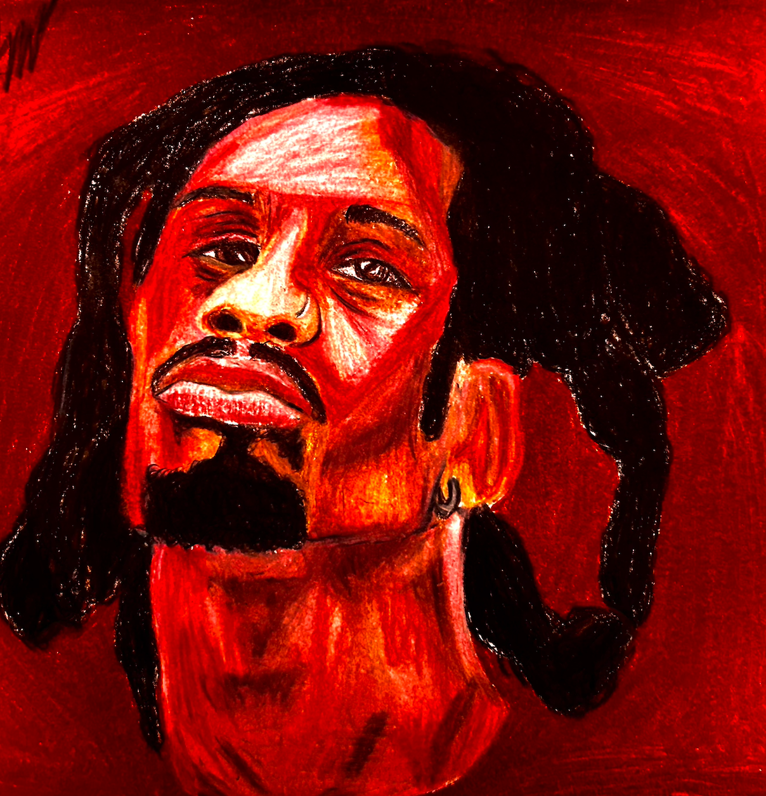

Piece 3
This piece was made for my fan art sketchbook project, the drawing is of one of my favorite artists, Denzel Curry, I tried focusing on more lively color choice that wasn’t as worried about realism and focused on emotion. Some of the techniques I used to capture more emotion in the piece were choosing colors not typically used for human skin to accentuate his features and more expressive eyes. Some of the challenges I faced when making this piece were shadows and depth, making the face look less flat, and making the techniques I used to show emotion not look exaggerated or dumb